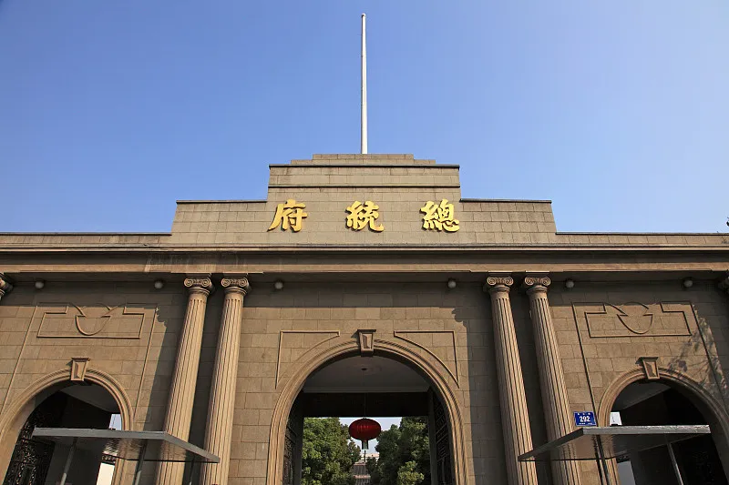

南京市，简称“宁”，古称金陵、建康，江苏省省会、副省级市、特大城市、南京都市圈核心城市， 国务院批复确定的中国东部地区重要的中心城市、全国重要的科研教育基地和综合交通枢纽。
通往鸡鸣寺前道路两旁的樱花尤其出名，每到清明时节，一片樱海，十分美丽。 鸡鸣寺始建于西晋，是南京最古老、香火最旺的佛寺之一。 寺中环境十分幽雅，香火缭绕，左为施食台，台前为弥勒殿，其上是大雄宝殿和观音楼。
南京总统府建筑群迄今已有600多年历史，分三个区域，中区(中轴线)、西区和东区。 总统府是国民政府中央所在地，见证着太平天国与两江总督衙门的兴衰。 南京总统府拥有诸多保存完好的近代中西建筑遗存、珍贵的文物史料以及风景优美的园林绿化环境。
玄武湖是中国最大的皇家园林湖泊，与嘉兴南湖、杭州西湖并称“江南三大名湖”。 主要包括樱洲、梁洲、翠洲等五块绿洲，荟萃了许多的名胜古迹，现在是南京最大的文化休闲公园。 菱洲的台菱花架上能眺望钟山的景色，梁洲有盆景园、杜鹃园楼等景观，每年10月至11月左右会举办菊花展。
开放时间
全年 09:00-22:00开放(周一-周日)
开放时间
全年 08:30-17:30开放(周一-周日)
开放时间
08:30-17:00；停止入场时间:17:00
开放时间
全天(全天) (1月1日-12月31日 周一-周日)
开放时间
07:00-17:30(01月01日-12月31日 周一-周日)
开放时间
08:30-17:00(全天)；停止入场时间:17:00